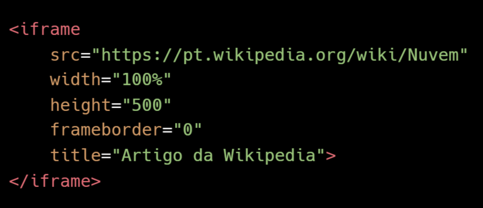
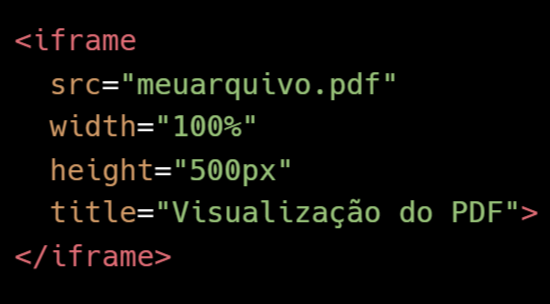
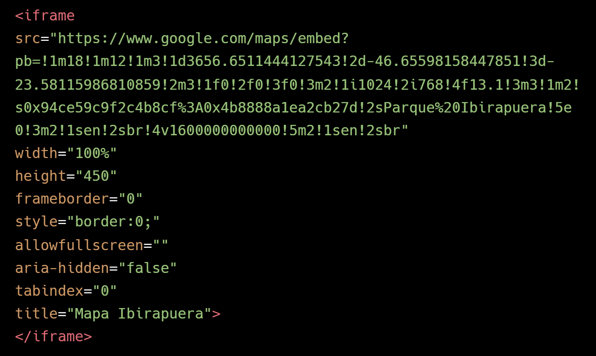

O elemento <iframe> é usado para incorporar um documento HTML dentro da página atual. Com ela, é possível exibir conteúdos externos como, páginas da web, vídeos do YouTube, mapas do Google Maps, documentos PDF e muito mais.
É como uma "janela" dentro da sua página, que mostra outro conteúdo da web.
Exemplos de Iframes
Outra Página Web
Exemplo de um iframe, que exibe uma página de outro site, nesse caso uma página da wikipedia:
Estrutura do HTML:

Neste exemplo, o iframe exibe a página da Wikipedia sobre "Nuvem". O atributo src especifica a URL do documento que será exibido dentro do iframe. Os atributos width e height definem as dimensões do iframe, enquanto o atributo frameborder controla a exibição da borda ao redor do iframe.
PDF Local
Exemplo de um iframe, que exibe um arquivo PDF local:
Estrutura do HTML:

Neste exemplo, o iframe exibe um arquivo PDF localizado no diretório. O atributo src especifica a URL do documento PDF que será exibido dentro do iframe. Os atributos width e height definem as dimensões do iframe.
PDFs locais podem ser bloqueados por políticas de segurança dos navegadores, especialmente se a página estiver sendo servida via HTTP ou HTTPS (o que está acontecendo com esse exemplo em dispositivos mobile). Em alguns casos, o navegador pode solicitar que o usuário faça o download do arquivo em vez de exibi-lo.
Google Maps
Exemplo de um iframe, que exibe uma página de outro site, nesse caso um mapa do Google Maps:
Estrutura do HTML:

Neste exemplo, o iframe exibe um mapa do Google Maps com a localização do Parque Ibirapuera. O atributo src especifica a URL do mapa que será exibido dentro do iframe. Os atributos width e height definem as dimensões do iframe, enquanto o atributo allowfullscreen permite que o mapa seja exibido em tela cheia.
Alguns Atributos
O atributo src especifica a URL do documento que será exibido dentro do iframe.
O atributo width define a largura do iframe, enquanto o atributo height define a altura.
O atributo frameborder controla a exibição da borda ao redor do iframe, onde "0" significa sem borda.
O atributo allowfullscreen permite que o conteúdo do iframe seja exibido em tela cheia.
O atributo loading pode ser usado para otimizar o carregamento do iframe. Os valores possíveis são lazy (carregar apenas quando necessário) e eager (carregar imediatamente). O mais recomendado é usar lazy para melhorar o desempenho da página.
O atributo sandbox pode ser usado para aplicar restrições adicionais ao conteúdo do iframe, como desabilitar scripts, formulários e outros recursos potencialmente inseguros. Você pode especificar quais restrições aplicar, como allow-scripts (permitir scripts) ou allow-forms (permitir formulários).
O atributo title é importante para acessibilidade, pois fornece uma descrição do conteúdo do iframe para leitores de tela e outros dispositivos assistivos.
O atributo allow pode ser usado para especificar quais recursos o iframe pode acessar, como geolocalização, câmera, microfone, entre outros. Por exemplo, allow="geolocation; microphone" permite que o iframe acesse a localização e o microfone do usuário.
O atributo name é usado para identificar o iframe, permitindo que você se refira a ele em scripts ou links. Isso é útil quando você deseja abrir links dentro do iframe ou manipular seu conteúdo com JavaScript.
O atributo srcdoc permite que você defina o conteúdo HTML do iframe diretamente, sem precisar de um arquivo externo. Isso é útil para exibir conteúdo dinâmico ou personalizado sem depender de uma URL externa.
Iframe Interativo
Você pode criar um iframe interativo que permite ao usuário interagir com o conteúdo dentro do iframe. Por exemplo, você pode incorporar um formulário de contato, uma galeria de imagens ou até mesmo um jogo simples.
Por exemplo, o iframe exibe um jogo simples hospedado em outro site. O usuário pode interagir com o jogo diretamente dentro do iframe, sem precisar sair da página atual.
Você pode personalizar o estilo do iframe usando CSS para garantir que ele se encaixe no design geral do seu site. Além disso, você pode usar JavaScript para adicionar funcionalidades extras, como controle de volume personalizado, playlists dinâmicas ou integração com outras partes do seu site.